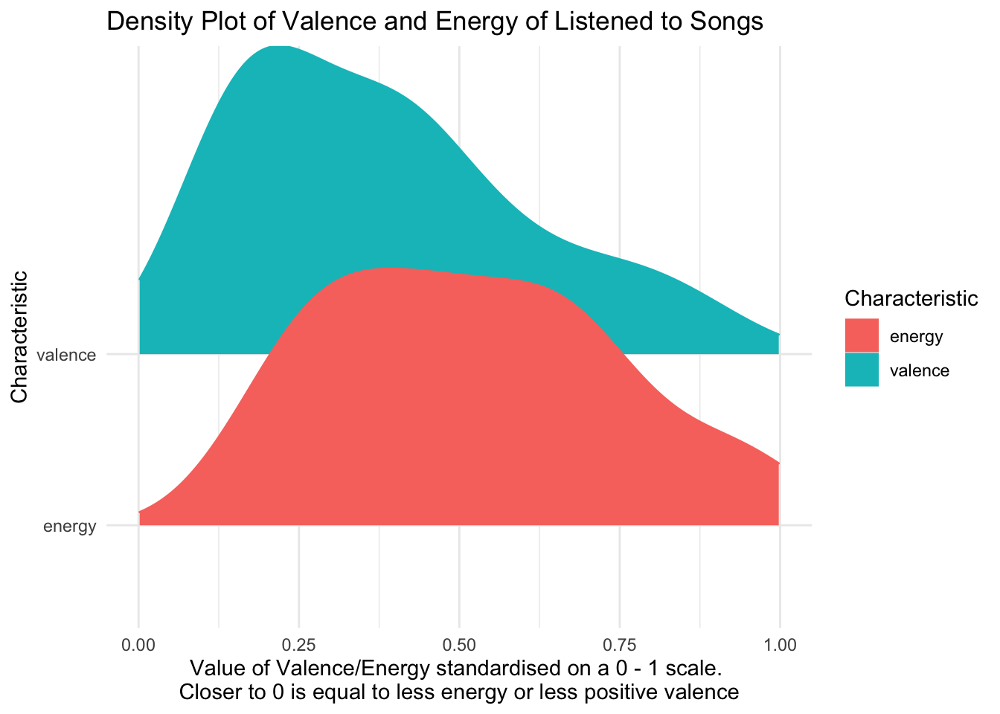
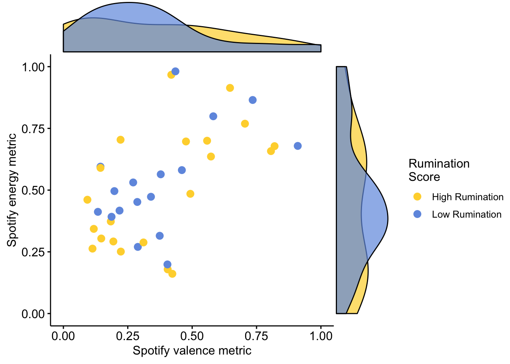
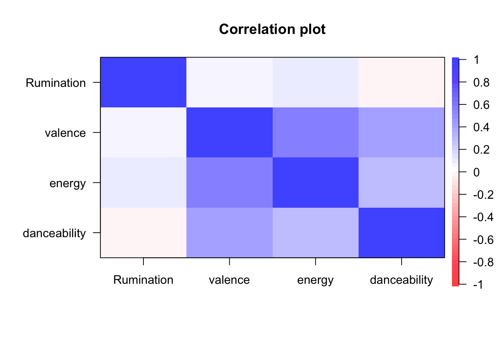

Last updated: 2019-09-23
Checks: 6 1
Knit directory: MusicEmoRegInRumination/
This reproducible R Markdown analysis was created with workflowr (version 1.4.0). The Checks tab describes the reproducibility checks that were applied when the results were created. The Past versions tab lists the development history.
The R Markdown is untracked by Git. To know which version of the R Markdown file created these results, you’ll want to first commit it to the Git repo. If you’re still working on the analysis, you can ignore this warning. When you’re finished, you can run wflow_publish to commit the R Markdown file and build the HTML.
Great job! The global environment was empty. Objects defined in the global environment can affect the analysis in your R Markdown file in unknown ways. For reproduciblity it’s best to always run the code in an empty environment.
The command set.seed(20190920) was run prior to running the code in the R Markdown file. Setting a seed ensures that any results that rely on randomness, e.g. subsampling or permutations, are reproducible.
Great job! Recording the operating system, R version, and package versions is critical for reproducibility.
Nice! There were no cached chunks for this analysis, so you can be confident that you successfully produced the results during this run.
Great job! Using relative paths to the files within your workflowr project makes it easier to run your code on other machines.
Great! You are using Git for version control. Tracking code development and connecting the code version to the results is critical for reproducibility. The version displayed above was the version of the Git repository at the time these results were generated.
Note that you need to be careful to ensure that all relevant files for the analysis have been committed to Git prior to generating the results (you can use wflow_publish or wflow_git_commit). workflowr only checks the R Markdown file, but you know if there are other scripts or data files that it depends on. Below is the status of the Git repository when the results were generated:
Ignored files:
Ignored: .DS_Store
Ignored: .Rproj.user/
Untracked files:
Untracked: analysis/StudyOneConfirm.Rmd
Untracked: analysis/StudyOneExplore.Rmd
Untracked: data/s1.csv
Untracked: data/s1Processed.csv
Untracked: docs/figure/
Untracked: s1MARScor.txt
Unstaged changes:
Modified: analysis/about.Rmd
Note that any generated files, e.g. HTML, png, CSS, etc., are not included in this status report because it is ok for generated content to have uncommitted changes.
There are no past versions. Publish this analysis with wflow_publish() to start tracking its development.
library(tidyverse)── Attaching packages ───────────────────────────────── tidyverse 1.2.1 ──✔ ggplot2 3.2.0 ✔ purrr 0.3.2
✔ tibble 2.1.3 ✔ dplyr 0.8.3
✔ tidyr 0.8.3 ✔ stringr 1.4.0
✔ readr 1.3.1 ✔ forcats 0.4.0── Conflicts ──────────────────────────────────── tidyverse_conflicts() ──
✖ dplyr::filter() masks stats::filter()
✖ dplyr::lag() masks stats::lag()library(ggridges)
Attaching package: 'ggridges'The following object is masked from 'package:ggplot2':
scale_discrete_manuallibrary(psych)
Attaching package: 'psych'The following objects are masked from 'package:ggplot2':
%+%, alphaHere I provide descriptive statistics for the songs listened to by participants who selected their own music.
s1Proc <- read_csv("data/s1Processed.csv")Parsed with column specification:
cols(
.default = col_double(),
MusicAccessNo = col_logical(),
Nationality = col_character(),
Condition = col_character(),
SelfSelected_Song1 = col_character(),
SelfSelected_Song2 = col_character(),
track_name = col_character(),
artist_name = col_character(),
album_name = col_character(),
key = col_character(),
mode = col_character(),
key_mode = col_character(),
RumSplit = col_character()
)See spec(...) for full column specifications.Here we can see descriptive statistics for the songs self selected
s1Proc %>%
dplyr::select(contains("track"),
contains("ness"),
energy,
mode,
valence,
duration_ms,
tempo,
time_signature,
artist_name) %>%
psych::describe()Warning in psych::describe(.): NAs introduced by coercion
Warning in psych::describe(.): NAs introduced by coercion
Warning in psych::describe(.): NAs introduced by coercionWarning in FUN(newX[, i], ...): no non-missing arguments to min; returning
Inf
Warning in FUN(newX[, i], ...): no non-missing arguments to min; returning
Inf
Warning in FUN(newX[, i], ...): no non-missing arguments to min; returning
InfWarning in FUN(newX[, i], ...): no non-missing arguments to max; returning
-Inf
Warning in FUN(newX[, i], ...): no non-missing arguments to max; returning
-Inf
Warning in FUN(newX[, i], ...): no non-missing arguments to max; returning
-Inf vars n mean sd median trimmed mad
track_name* 1 38 NaN NA NA NaN NA
track_popularity 2 38 50.92 19.17 53.00 51.84 25.20
Sadness_MIP 3 128 1.00 0.00 1.00 1.00 0.00
loudness 4 38 -8.79 4.78 -6.88 -8.18 2.29
speechiness 5 38 0.07 0.07 0.04 0.05 0.01
acousticness 6 38 0.37 0.34 0.30 0.35 0.42
instrumentalness 7 38 0.06 0.20 0.00 0.00 0.00
liveness 8 38 0.16 0.11 0.12 0.15 0.06
energy 9 38 0.52 0.22 0.49 0.51 0.28
mode* 10 38 NaN NA NA NaN NA
valence 11 38 0.38 0.22 0.36 0.36 0.24
duration_ms 12 38 248908.13 68660.79 241772.00 247376.97 69118.07
tempo 13 38 119.91 29.90 120.03 119.60 33.30
time_signature 14 38 3.89 0.31 4.00 3.97 0.00
artist_name* 15 38 NaN NA NA NaN NA
min max range skew kurtosis se
track_name* Inf -Inf -Inf NA NA NA
track_popularity 0.00 80.00 80.00 -0.45 -0.51 3.11
Sadness_MIP 1.00 1.00 0.00 NaN NaN 0.00
loudness -22.32 -1.99 20.33 -1.31 1.09 0.77
speechiness 0.03 0.32 0.29 2.18 4.03 0.01
acousticness 0.00 0.97 0.97 0.43 -1.37 0.05
instrumentalness 0.00 0.89 0.89 3.54 11.32 0.03
liveness 0.03 0.61 0.58 1.86 3.93 0.02
energy 0.16 0.98 0.82 0.31 -0.89 0.04
mode* Inf -Inf -Inf NA NA NA
valence 0.09 0.91 0.82 0.68 -0.54 0.04
duration_ms 103306.00 393120.00 289814.00 0.15 -0.68 11138.25
tempo 64.83 180.30 115.47 0.06 -1.03 4.85
time_signature 3.00 4.00 1.00 -2.47 4.22 0.05
artist_name* Inf -Inf -Inf NA NA NAHere the frequnency plot of the spotify metrics for valence and arousal expressed in the song. We can see that the tracks tended to be more negative in valence but that energy levels were more normal in their distribution.
s1Proc %>%
tidyr::gather(key = Characteristic,
value = value,
valence, energy) %>%
ggplot2::ggplot(aes(x = value, y = Characteristic, color = Characteristic, fill = Characteristic)) +
ggridges::geom_density_ridges() +
ggplot2::xlim(0,1) +
ggplot2::theme_minimal()+
ggplot2::ggtitle("Density Plot of Valence and Energy of Listened to Songs") +
ggplot2::xlab("Value of Valence/Energy standardised on a 0 - 1 scale. \nCloser to 0 is equal to less energy or less positive valence")Picking joint bandwidth of 0.0965Warning: Removed 180 rows containing non-finite values
(stat_density_ridges).
Here we can see the songs plotted onto an affective grid of the affect expression.
s1Proc %>%
filter(mode == "minor" | mode == "major" & !is.na(track_name)) %>%
ggplot2::ggplot(aes(x = valence,
y = energy,
color = mode)) +
geom_point(size = 10, alpha = .5) +
geom_hline(yintercept = .5) +
geom_vline(xintercept =.5) +
ylim(0,1) +
xlim(0,1) +
ggplot2::geom_point(aes(color = mode)) +
ggplot2::geom_hline(yintercept = .5) +
ggplot2::geom_vline(xintercept =.5) +
ggplot2::ylim(0,1) +
ggplot2::xlim(0,1)Scale for 'y' is already present. Adding another scale for 'y', which
will replace the existing scale.Scale for 'x' is already present. Adding another scale for 'x', which
will replace the existing scale.
Interstingly, it seems that the songs are clustering around the lower left quadrant (which includes prototypical sadness, Russell, 1980) and the upper right (which includes prototypical happiness). It seems the descriptives for energy are being driven by whether the music selected is positive or negative. It is possible the selection is being made on a valence criteria and the normal distrubution of energy is a product of positively valenced music being higher in arousal. This is consistent with the relative high arousal ratings seen in the Eerola and Vuoskoski set which was designed to include all four quadrants
s1SpotCor <- dplyr::select(s1Proc, Rumination, valence, energy, danceability)
psych::cor.plot(s1SpotCor, star = TRUE)
apaTables::apa.cor.table(s1SpotCor)
Means, standard deviations, and correlations with confidence intervals
Variable M SD 1 2 3
1. Rumination 3.71 0.62
2. valence 0.38 0.22 .05
[-.27, .36]
3. energy 0.52 0.22 .10 .55**
[-.23, .40] [.28, .74]
4. danceability 0.53 0.14 -.05 .38* .27
[-.37, .27] [.07, .63] [-.05, .55]
Note. M and SD are used to represent mean and standard deviation, respectively.
Values in square brackets indicate the 95% confidence interval.
The confidence interval is a plausible range of population correlations
that could have caused the sample correlation (Cumming, 2014).
* indicates p < .05. ** indicates p < .01.
sessionInfo()R version 3.6.1 (2019-07-05)
Platform: x86_64-apple-darwin15.6.0 (64-bit)
Running under: macOS Mojave 10.14.6
Matrix products: default
BLAS: /Library/Frameworks/R.framework/Versions/3.6/Resources/lib/libRblas.0.dylib
LAPACK: /Library/Frameworks/R.framework/Versions/3.6/Resources/lib/libRlapack.dylib
locale:
[1] en_AU.UTF-8/en_AU.UTF-8/en_AU.UTF-8/C/en_AU.UTF-8/en_AU.UTF-8
attached base packages:
[1] stats graphics grDevices utils datasets methods base
other attached packages:
[1] psych_1.8.12 ggridges_0.5.1 forcats_0.4.0 stringr_1.4.0
[5] dplyr_0.8.3 purrr_0.3.2 readr_1.3.1 tidyr_0.8.3
[9] tibble_2.1.3 ggplot2_3.2.0 tidyverse_1.2.1
loaded via a namespace (and not attached):
[1] tidyselect_0.2.5 xfun_0.9 haven_2.1.1 lattice_0.20-38
[5] colorspace_1.4-1 generics_0.0.2 vctrs_0.2.0 htmltools_0.3.6
[9] yaml_2.2.0 rlang_0.4.0 pillar_1.4.2 foreign_0.8-71
[13] glue_1.3.1 withr_2.1.2 modelr_0.1.4 readxl_1.3.1
[17] plyr_1.8.4 munsell_0.5.0 gtable_0.3.0 workflowr_1.4.0
[21] cellranger_1.1.0 rvest_0.3.4 apaTables_2.0.5 evaluate_0.14
[25] labeling_0.3 knitr_1.24 parallel_3.6.1 broom_0.5.2
[29] Rcpp_1.0.2 scales_1.0.0 backports_1.1.4 jsonlite_1.6
[33] fs_1.3.1 mnormt_1.5-5 hms_0.5.0 digest_0.6.20
[37] stringi_1.4.3 grid_3.6.1 rprojroot_1.3-2 cli_1.1.0
[41] tools_3.6.1 magrittr_1.5 lazyeval_0.2.2 crayon_1.3.4
[45] pkgconfig_2.0.2 zeallot_0.1.0 xml2_1.2.1 lubridate_1.7.4
[49] assertthat_0.2.1 rmarkdown_1.14 httr_1.4.1 rstudioapi_0.10
[53] R6_2.4.0 nlme_3.1-140 git2r_0.26.1 compiler_3.6.1